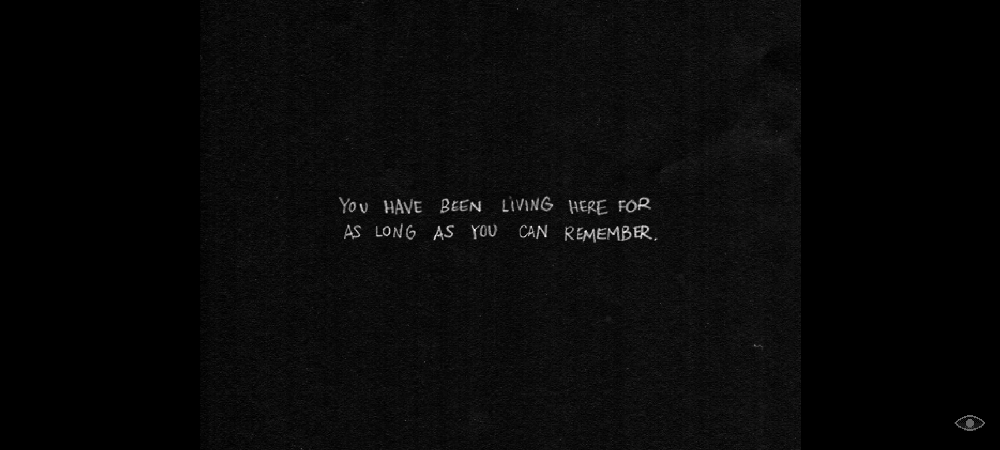
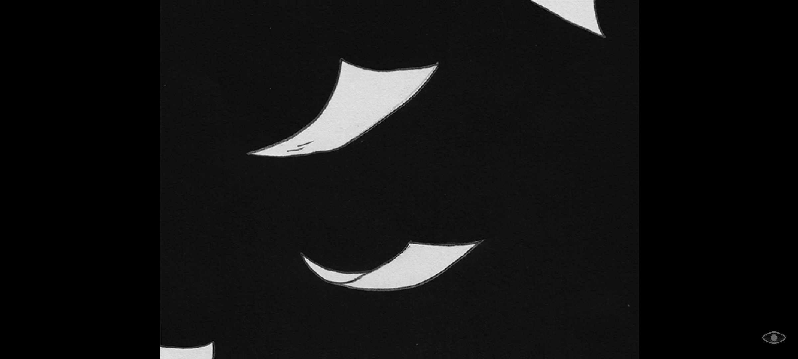
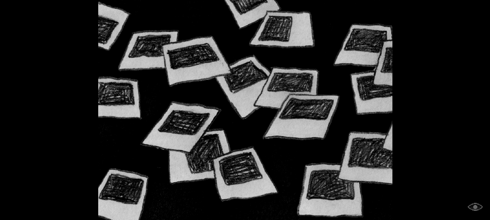
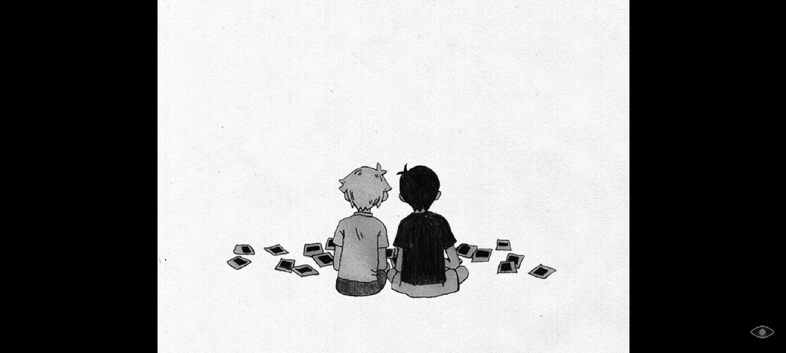
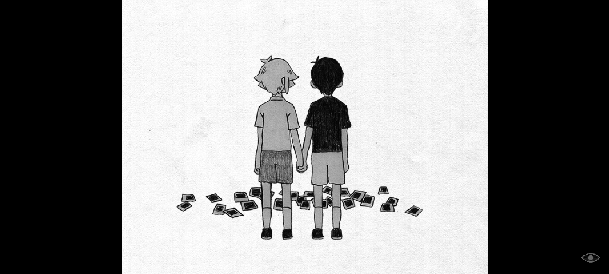
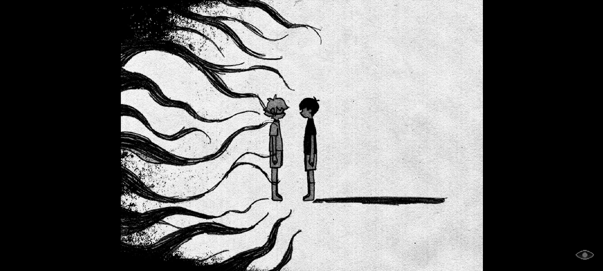
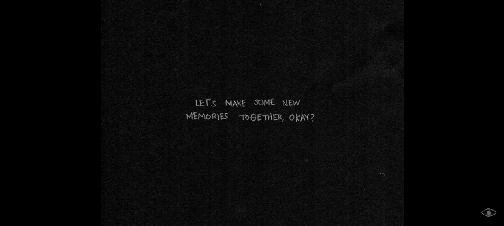
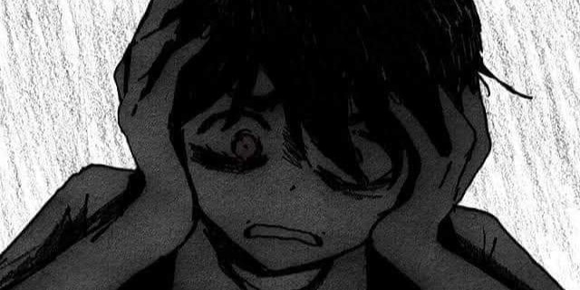

BLACK SPACE: THE MEMORIES BURIED WITHIN
Omori in the tippest of its Iceberg looks like a very friendly with a pastle-ish palette of colors,
keeping its facade of love, unity and friendship. That is until their friend Basil has uncovered something
making him suddenly disappear. This has led to Omori and his friends: Aubrey, Kel, Hero, and his sister Mari
on a journey to find their friend. The journey was long, hard with many sideline quests to the point,...
the NPCs (or even you) have forgotten the goal of the journey. As you embark on the journey, you will find strange,
enigmas, and even creepy and scary things. Once you have gotten to OMORI's blackspace, you will find out every
inch of memory he has buried deep within. The death of his sister that was caused by none other than himself, SUNNY.
As you wander in the black space, you will fight the things that you have always feared. The things you have always
ran away from. You reach to the point of facing yourself and the YOU, the player, will play as SUNNY (his real self)
against the character you have been playing all throughout the game, OMORI.
We know things have gotten darker and traumatising at this point but it is also directly proportional to the theme.
As you fight OMORI, the very theme that has saved multiple people and the utmost important part of the game will surface.
the THEME of ACCEPTANCE and SELF LOVE.
The fact that he has to face the fact that he has accidentally killed his sister, MARI,
a person who's loved by all, the favorite child, the lover of his friend's brother, and most of all,
His BELOVED SISTER is too much to bear. Even I, as a player, have never once felt the fear of
accidentally killing your beloved and the trauma of the scene and the warmth leaving your sister's body
until I played OMORI. The fight between you (SUNNY) and OMORI is excruciating. You don't have in-game
items, nor the skills to fight. You are just SUNNY, a frail shut-in, always engulfed in fear and depression.
Throughout the fight, OMORI will amke you face the reality and the gravity of the things you have done.
He will guilt trip you, slander you, and even tell you to just forget everything, like a cycle. over and Over and
OVER AGAIN. You being in the white space isn't your first time. You have been there as long as you can remember.
You have been through this many times. Suffering all over again. You have been burying a resurfacing memory for a long time.
You, the player, must break this cycle. And every choice you have made in the headspace will affect the choices
SUNNY will make in the real life.
waiting for something to happen?...







